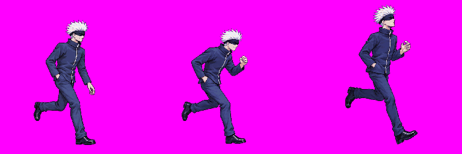
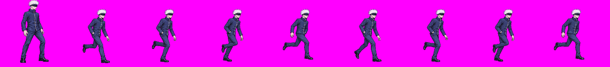
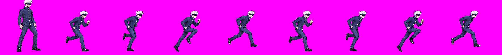
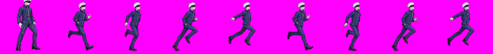

Gojo run direction studies J / K / L
Unapproved direction candidates. Each contact sheet shows approved idle f0 beside run frames 0–7 at one scale. Playback is 60 ms per frame. Compare stride, leg identity, hand placement, and the loop seam. The selected direction will still need a separate production strip and technical review.

J — Easy long stride
Contact sheet (idle f0 + frames 0–7) · GIF · MP4 · 8 × 256 strip



K — Fast athletic
Contact sheet (idle f0 + frames 0–7) · GIF · MP4 · 8 × 256 strip



L — Upright showboat
Contact sheet (idle f0 + frames 0–7) · GIF · MP4 · 8 × 256 strip


